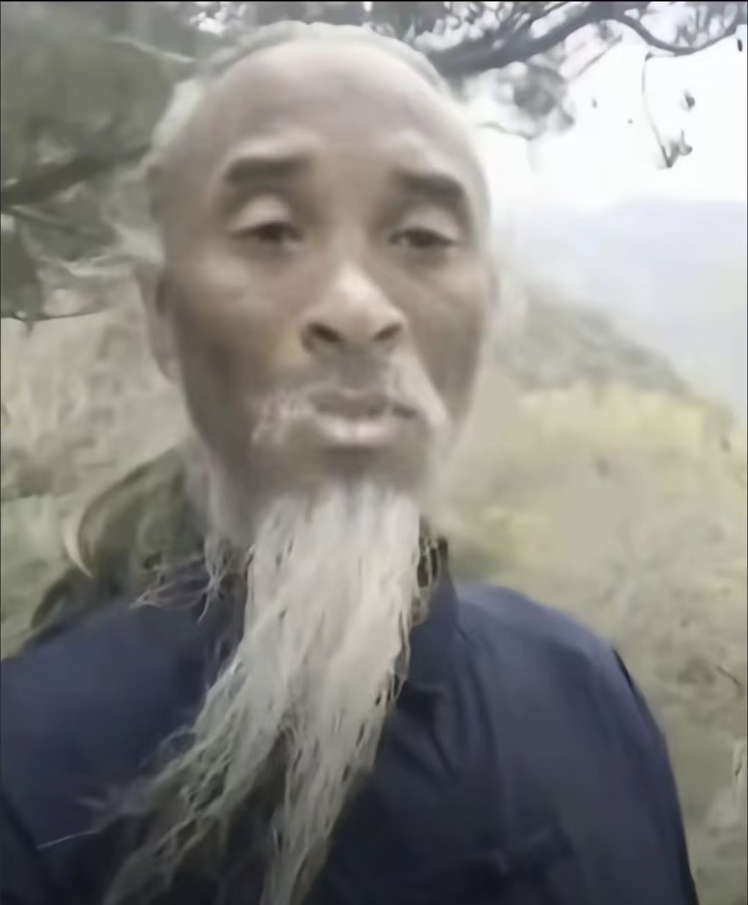
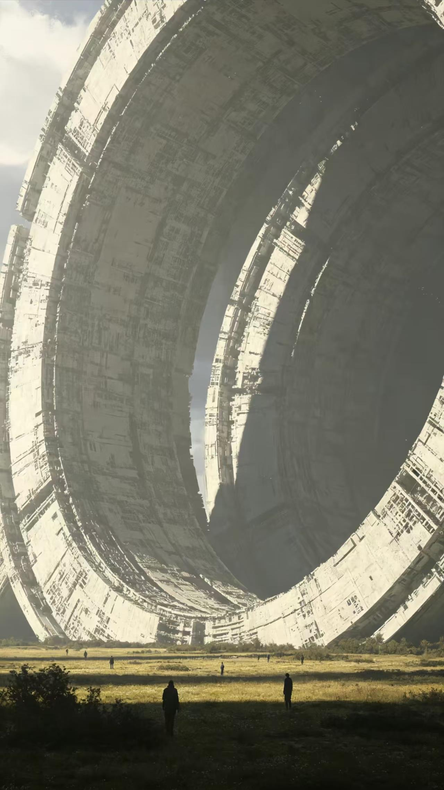
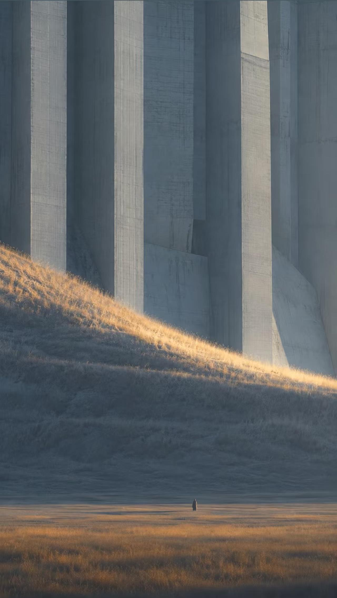

Personal archive / JY-01A quiet life beneath impossible structures
金源街
小佩奇在巨构之下，仰望尺度
偏爱混凝土的重量、巨构的沉默，以及荒原尽头的光。这里是我的个人空间，记录一点关于喜欢的事。
Concrete / Scale / SilenceScroll to explore
FIELD NOTES · 01—02
巨物，静默地生长
高耸的墙体、环状的构造，和人影之间的尺度差。比起装饰，更迷恋材料与空间本身。

